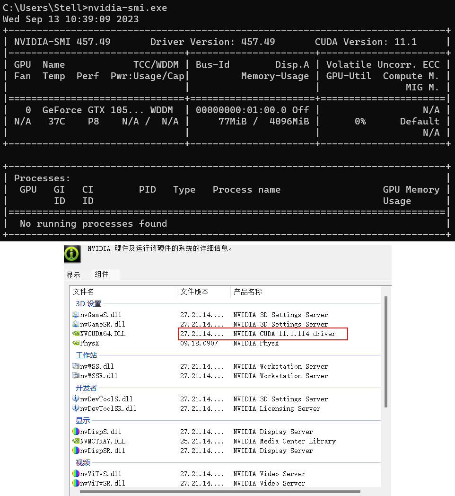

CONTENT OUTLINE
卷积神经网络
〇、目录 一、Pytorch神经网络基础 1、模型构造 层和块 回顾一下多层感知机
1 2 3 4 5 6 7 8 9 10 11 12 import torchfrom torch import nnfrom torch.nn import functional as Fnet = nn.Sequential(nn.Linear(20 , 256 ), nn.ReLU(), nn.Linear(256 , 10 )) X = torch.rand(2 , 20 ) net(X) Out: tensor([[-0.0592 , 0.0558 , -0.2263 , -0.1218 , -0.1035 , 0.0366 , -0.0849 , -0.0338 , 0.1567 , 0.0243 ], [-0.0824 , 0.0313 , -0.1744 , -0.0658 , -0.1209 , 0.0315 , -0.0919 , -0.0731 , 0.0743 , -0.0659 ]], grad_fn=<AddmmBackward>)
nn.Sequential定义了一种特殊的Module【任何神经网络层都应该是Module的子类】
自定义块 1 2 3 4 5 6 7 8 9 class MLP (nn.Module ): def __init__ (self ): super().__init__() self.hidden = nn.Linear(20 , 256 ) self.out = nn.Linear(256 , 10 ) def forward (self, X ): return self.out(F.relu(self.hidden(X)))
实例化多层感知机的层，然后在每次调用正向传播函数时调用这些层
1 2 3 4 5 6 net = MLP() net(X) Out: tensor([[-0.1112 , -0.0417 , 0.1602 , -0.0653 , -0.1528 , 0.0481 , 0.4155 , 0.0348 , -0.0357 , -0.0241 ], [-0.1352 , -0.0162 , 0.1379 , 0.0162 , -0.1218 , 0.0981 , 0.3939 , 0.0406 , -0.0234 , -0.1018 ]], grad_fn=<AddmmBackward0>)
顺序块 实现与nn.Sequential一样的功能
1 2 3 4 5 6 7 8 9 10 11 12 13 14 15 16 17 18 class MySequential (nn.Module ): def __init__ (self, *args ): super().__init__() for block in args: self._modules[block] = block def forward (self, X ): for block in self._modules.values(): X = block(X) return X net = MySequential(nn.Linear(20 , 256 ), nn.ReLU(), nn.Linear(256 , 10 )) net(X) Out: tensor([[-0.1840 , 0.0114 , 0.1589 , 0.0729 , -0.1335 , 0.0517 , 0.0956 , -0.1545 , 0.0713 , 0.1012 ], [-0.1319 , 0.0737 , 0.1547 , 0.1419 , -0.1117 , -0.0313 , -0.0084 , -0.0456 , 0.0429 , 0.1718 ]], grad_fn=<AddmmBackward>)
在正向传播函数中执行代码
1 2 3 4 5 6 7 8 9 10 11 12 13 14 15 16 17 18 19 20 21 22 23 24 class FixedHiddenMLP (nn.Module ): def __init__ (self ): super().__init__() self.rand_weight = torch.rand((20 , 20 ), requires_grad=False ) self.linear = nn.Linear(20 , 20 ) def forward (self, X ): X = self.linear(X) X = F.relu(torch.mm(X, self.rand_weight) + 1 ) X = self.linear(X) while X.abs().sum() > 1 : X /= 2 return X.sum() net = FixedHiddenMLP() net(X) Out: tensor(0.2000 , grad_fn=<SumBackward0>)
🔺可以通过继承nn.Module的方法，可以比nn.Sequential 更灵活地做前向计算
当然，反向计算不需要定义，都是自动求导
混合搭配各种组合块的方法【嵌套使用】
1 2 3 4 5 6 7 8 9 10 11 12 13 14 15 class NestMLP (nn.Module ): def __init__ (self ): super().__init__() self.net = nn.Sequential(nn.Linear(20 , 64 ), nn.ReLU(), nn.Linear(64 , 32 ), nn.ReLU()) self.linear = nn.Linear(32 , 16 ) def forward (self, X ): return self.linear(self.net(X)) chimera = nn.Sequential(NestMLP(), nn.Linear(16 , 20 ), FixedHiddenMLP()) chimera(X) Out: tensor(-0.1374 , grad_fn=<SumBackward0>)
2、参数管理 我们首先关注具有单隐藏层的多层感知机
1 2 3 4 5 6 7 8 9 10 import torchfrom torch import nnnet = nn.Sequential(nn.Linear(4 , 8 ), nn.ReLU(), nn.Linear(8 , 1 )) X = torch.rand(size=(2 , 4 )) net(X) Out: tensor([[-0.5876 ], [-0.5556 ]], grad_fn=<AddmmBackward>)
参数访问 1 2 3 4 print(net[2 ].state_dict()) Out: OrderedDict([('weight' , tensor([[ 0.0181 , 0.0557 , 0.0219 , -0.3431 , 0.1738 , -0.0249 , 0.1345 , -0.2593 ]])), ('bias' , tensor([-0.3221 ]))])
目标参数【Parameter 被定义为是可以被优化的参数】
1 2 3 4 5 6 7 8 9 10 11 12 13 print(type(net[2 ].bias)) print(net[2 ].bias) print(net[2 ].bias.data) net[2 ].weight.grad == None Out: <class 'torch .nn .parameter .Parameter '> Parameter containing : tensor([-0.3221 ], requires_grad=True ) tensor([-0.3221 ]) True
一次性访问所有参数【全部拿出 | 按层 | 按名 拿出参数】
1 2 3 4 5 6 7 8 9 10 print(*[(name, param.shape) for name, param in net[0 ].named_parameters()]) print(*[(name, param.shape) for name, param in net.named_parameters()]) net.state_dict()['2.bias' ].data Out: ('weight' , torch.Size([8 , 4 ])) ('bias' , torch.Size([8 ])) ('0.weight' , torch.Size([8 , 4 ])) ('0.bias' , torch.Size([8 ])) ('2.weight' , torch.Size([1 , 8 ])) ('2.bias' , torch.Size([1 ])) tensor([-0.3221 ])
ReLU是没有参数的
从嵌套块收集参数
add_module()函数创建的Sequential，唯一区别 在于可以指定层的名称
1 2 3 4 5 6 7 8 9 10 11 12 13 14 15 16 def block1 (): return nn.Sequential(nn.Linear(4 , 8 ), nn.ReLU(), nn.Linear(8 , 4 ), nn.ReLU()) def block2 (): net = nn.Sequential() for i in range(4 ): net.add_module(f'block {i} ' , block1()) return net rgnet = nn.Sequential(block2(), nn.Linear(4 , 1 )) rgnet(X) Out: tensor([[0.2755 ], [0.2755 ]], grad_fn=<AddmmBackward>)
我们已经设计了网络，让我们看看它是如何组织的
1 2 3 4 5 6 7 8 9 10 11 12 13 14 15 16 17 18 19 20 21 22 23 24 25 26 27 28 29 30 31 32 print(rgnet) Out: Sequential( (0 ): Sequential( (block 0 ): Sequential( (0 ): Linear(in_features=4 , out_features=8 , bias=True ) (1 ): ReLU() (2 ): Linear(in_features=8 , out_features=4 , bias=True ) (3 ): ReLU() ) (block 1 ): Sequential( (0 ): Linear(in_features=4 , out_features=8 , bias=True ) (1 ): ReLU() (2 ): Linear(in_features=8 , out_features=4 , bias=True ) (3 ): ReLU() ) (block 2 ): Sequential( (0 ): Linear(in_features=4 , out_features=8 , bias=True ) (1 ): ReLU() (2 ): Linear(in_features=8 , out_features=4 , bias=True ) (3 ): ReLU() ) (block 3 ): Sequential( (0 ): Linear(in_features=4 , out_features=8 , bias=True ) (1 ): ReLU() (2 ): Linear(in_features=8 , out_features=4 , bias=True ) (3 ): ReLU() ) ) (1 ): Linear(in_features=4 , out_features=1 , bias=True ) )
1 2 3 4 rgnet[0 ][1 ][0 ].bias.data Out: tensor([-0.0178 , 0.4432 , 0.4543 , -0.3561 , -0.0851 , -0.4227 , 0.3945 , -0.4169 ])
内置初始化 随机初始化
1 2 3 4 5 6 7 8 9 10 def init_normal (m ): if type(m) == nn.Linear: nn.init.normal_(m.weight, mean=0 , std=0.01 ) nn.init.zeros_(m.bias) net.apply(init_normal) net[0 ].weight.data[0 ], net[0 ].bias.data[0 ] Out: (tensor([-0.0013 , 0.0037 , -0.0172 , 0.0156 ]), tensor(0. ))
参数m表示Module
nn.init.normal_()：下划线表示为替换函数，即不返回值，而是替换参数
nn.init中有大量初始化函数
🔺net.apply(init_normal)：将net中所有的Module作为参数m传入 init_mormal(m)，遍历初始化一遍参数
对某些块初始话为常量【API的角度可以做，但不能这么干】
1 2 3 4 5 6 7 8 9 10 def init_constant (m ): if type(m) == nn.Linear: nn.init.constant_(m.weight, 1 ) nn.init.zeros_(m.bias) net.apply(init_constant) net[0 ].weight.data[0 ], net[0 ].bias.data[0 ] Out: (tensor([1. , 1. , 1. , 1. ]), tensor(0. ))
对某些块应用不同的初始化方法
1 2 3 4 5 6 7 8 9 10 11 12 13 14 15 16 17 18 def xavier (m ): if type(m) == nn.Linear: nn.init.xavier_uniform_(m.weight) def init_42 (m ): if type(m) == nn.Linear: nn.init.constant_(m.weight, 42 ) net[0 ].apply(xavier) net[2 ].apply(init_42) print(net[0 ].weight.data[0 ]) print(net[2 ].weight.data) Out: tensor([-0.0453 , -0.3169 , 0.3091 , -0.2077 ]) tensor([[42. , 42. , 42. , 42. , 42. , 42. , 42. , 42. ]])
自定义初始化 1 2 3 4 5 6 7 8 9 10 11 12 13 14 15 16 17 18 def my_init (m ): if type(m) == nn.Linear: print( "Init" , *[(name, param.shape) for name, param in m.named_parameters()][0 ]) nn.init.uniform_(m.weight, -10 , 10 ) m.weight.data *= m.weight.data.abs() >= 5 net.apply(my_init) net[0 ].weight[:2 ] Out: Init weight torch.Size([8 , 4 ]) Init weight torch.Size([1 , 8 ]) tensor([[ 0.0000 , -9.6254 , 0.0000 , 6.0600 ], [ 0.0000 , 7.9085 , -0.0000 , -0.0000 ]], grad_fn=<SliceBackward>)
直接修改权重参数，也是可以的实现的
1 2 3 4 5 6 net[0 ].weight.data[:] += 1 net[0 ].weight.data[0 , 0 ] = 42 net[0 ].weight.data[0 ] Out: tensor([42.0000 , -8.6254 , 1.0000 , 7.0600 ])
参数绑定 【应用：在不同网络之间共享权重的方法 】
1 2 3 4 5 6 7 8 9 10 11 shared = nn.Linear(8 , 8 ) net = nn.Sequential(nn.Linear(4 , 8 ), nn.ReLU(), shared, nn.ReLU(), shared, nn.ReLU(), nn.Linear(8 , 1 )) net(X) print(net[2 ].weight.data[0 ] == net[4 ].weight.data[0 ]) net[2 ].weight.data[0 , 0 ] = 100 print(net[2 ].weight.data[0 ] == net[4 ].weight.data[0 ]) Out: tensor([True , True , True , True , True , True , True , True ]) tensor([True , True , True , True , True , True , True , True ])
3、自定义层 构造一个没有任何参数的自定义层【自定义层和自定义网络层没有本质区别，都是 nn.Module 的子类】
1 2 3 4 5 6 7 8 9 10 11 12 13 14 15 16 import torchimport torch.nn.functional as Ffrom torch import nnclass CenteredLayer (nn.Module ): def __init__ (self ): super().__init__() def forward (self, X ): return X - X.mean() layer = CenteredLayer() layer(torch.FloatTensor([1 , 2 , 3 , 4 , 5 ])) Out: tensor([-2. , -1. , 0. , 1. , 2. ])
将层作为组件合并到构建更复杂的模型中
1 2 3 4 5 6 7 net = nn.Sequential(nn.Linear(8 , 128 ), CenteredLayer()) Y = net(torch.rand(4 , 8 )) Y.mean() Out: tensor(4.6566e-10 , grad_fn=<MeanBackward0>)
带参数的层【必须要使用 nn.Parameter 构造参数 】
1 2 3 4 5 6 7 8 9 10 11 12 13 14 15 16 17 18 19 20 class MyLinear (nn.Module ): def __init__ (self, in_units, units ): super().__init__() self.weight = nn.Parameter(torch.randn(in_units, units)) self.bias = nn.Parameter(torch.randn(units,)) def forward (self, X ): linear = torch.matmul(X, self.weight.data) + self.bias.data return F.relu(linear) linear = MyLinear(5 , 3 ) linear.weight Out: Parameter containing: tensor([[-0.5359 , 0.1707 , 0.1999 ], [-1.7083 , 0.9041 , 0.1031 ], [-0.9424 , -0.7027 , 0.7929 ], [ 0.3570 , -0.8159 , -1.0664 ], [-2.1450 , -0.1423 , 1.0392 ]], requires_grad=True )
使用自定义层直接执行正向传播计算
1 2 3 4 5 linear(torch.rand(2 , 5 )) Out: tensor([[0.0000 , 0.0000 , 1.5329 ], [0.0000 , 0.0000 , 1.4804 ]])
使用自定义层构建模型
1 2 3 4 5 6 net = nn.Sequential(MyLinear(64 , 8 ), MyLinear(8 , 1 )) net(torch.rand(2 , 64 )) Out: tensor([[0. ], [0. ]])
4、读写文件 加载与保存举例 加载和保存张量
1 2 3 4 5 6 7 8 9 10 11 12 import torchfrom torch import nnfrom torch.nn import functional as Fx = torch.arange(4 ) torch.save(x, 'x-file' ) x2 = torch.load('x-file' ) x2 Out: tensor([0 , 1 , 2 , 3 ])
存储一个张量列表 ，然后把它们读回内存
1 2 3 4 5 6 7 y = torch.zeros(4 ) torch.save([x, y], 'x-files' ) x2, y2 = torch.load('x-files' ) (x2, y2) Out: (tensor([0 , 1 , 2 , 3 ]), tensor([0. , 0. , 0. , 0. ]))
写入或读取从字符串映射到张量 的字典
1 2 3 4 5 6 7 mydict = {'x' : x, 'y' : y} torch.save(mydict, 'mydict' ) mydict2 = torch.load('mydict' ) mydict2 Out: {'x' : tensor([0 , 1 , 2 , 3 ]), 'y' : tensor([0. , 0. , 0. , 0. ])}
加载和保存模型参数 1 2 3 4 5 6 7 8 9 10 11 12 class MLP (nn.Module ): def __init__ (self ): super().__init__() self.hidden = nn.Linear(20 , 256 ) self.output = nn.Linear(256 , 10 ) def forward (self, x ): return self.output(F.relu(self.hidden(x))) net = MLP() X = torch.randn(size=(2 , 20 )) Y = net(X)
此处，实例化 MLP 之后，直接 net(X)，实际上是 net.__call__(X)，是python里自己的映射，也可以使用 net.forward(X)
将模型的参数存储为一个叫做“mlp.params”的文件
1 torch.save(net.state_dict(), 'mlp.params' )
实例化了原始多层感知机模型的一个备份。 直接读取文件中存储的参数
1 2 3 4 5 6 7 8 9 clone = MLP() clone.load_state_dict(torch.load('mlp.params' )) clone.eval() Out: MLP( (hidden): Linear(in_features=20 , out_features=256 , bias=True ) (output): Linear(in_features=256 , out_features=10 , bias=True ) )
1 2 3 4 5 6 7 Y_clone = clone(X) Y_clone == Y Out: tensor([[True , True , True , True , True , True , True , True , True , True ], [True , True , True , True , True , True , True , True , True , True ]])
5、Q&A 5.1 Little Problems Xavier初始化、kaiming初始化，都是为了让训练的每一层的输入输出不要在一开始就是炸掉或消失 几乎没有函数是不可导的，只是说不是处处可导。而深度学习中基本均为数值运算，求导遇到不可导点的概率极低，所以就算碰到随便给0也ok 5.2 内存爆炸问题 🔺在将类别转换成伪变量的时候，内存炸掉怎么办？
之前讲过如果特征是字符串，可以用one-hot编码，生成一个列表，当类别很多时，这个列表将极其庞大，内存可能会爆炸。
解决办法有两个。一是使用稀疏矩阵存储；二是就不应该使用one-hot，太低效了，当具有很多很多类别的时候，应该通过别的方法。比如竞赛中的地址项，可以做 backforward，即将地址中的每个词拿出来，而不是将整个句子拿出来
6、GPU 什么是cuda？
统一计算设备架构（Compute Unified Device Architecture , CUDA），是由NVIDIA推出的通用并行计算架构。解决的是用更加廉价的设备资源，实现更高效的并行计算。
CUDA是一种由NVIDIA推出的计算平台和编程模型，它使开发人员可以在NVIDIA GPU上实现高性能计算应用程序。CUDA主要用于加速计算密集型任务，例如科学计算、深度学习、图形处理和密码学等领域。CUDA提供了一组API和工具，包括CUDA C/C++编译器、CUDA库、CUDA驱动程序和CUDA Toolkit等，使开发人员可以使用C/C++编程语言来编写高效的GPU应用程序。
GPU与CUDA 查看显卡信息
如果GPU利用率低于50%，可能是模型不优
以下假设有3块GPU可用，即编号0/1/2
计算设备默认使用CPU，如需使用GPU计算，需要手动指定
1 2 3 4 5 6 7 8 9 10 import torchfrom torch import nntorch.device('cpu' ), torch.cuda.device('cuda' ), torch.cuda.device('cuda:1' ) Out: (device(type='cpu' ), <torch.cuda.device at 0x7f723468cdc0 >, <torch.cuda.device at 0x7f7234655310 >)
查询可用gpu的数量
1 2 3 4 torch.cuda.device_count() Out: 2
cuda常见用法：
1 2 3 4 5 6 7 8 torch.cuda.is_available() torch.cuda.device_count() torch.cuda.get_device_capability(device) torch.cuda.get_device_name(device) torch.cuda.empty_cache() torch.cuda.manual_seed(seed) torch.cuda.manual_seed_all(seed) torch.cuda.get_device_properties(i)
这两个函数允许我们在请求的GPU不存在的情况下运行代码
1 2 3 4 5 6 7 8 9 10 11 12 13 14 15 16 17 18 def try_gpu (i=0 ): """如果存在，则返回gpu(i)，否则返回cpu()。""" if torch.cuda.device_count() >= i + 1 : return torch.device(f'cuda:{i} ' ) return torch.device('cpu' ) def try_all_gpus (): """返回所有可用的GPU，如果没有GPU，则返回[cpu(),]。""" devices = [ torch.device(f'cuda:{i} ' ) for i in range(torch.cuda.device_count())] return devices if devices else [torch.device('cpu' )] try_gpu(), try_gpu(10 ), try_all_gpus() Out: (device(type='cuda' , index=0 ), device(type='cpu' ), [device(type='cuda' , index=0 ), device(type='cuda' , index=1 )])
查询张量所在的设备
1 2 3 4 5 x = torch.tensor([1 , 2 , 3 ]) x.device Out: device(type='cpu' )
存储在GPU上
1 2 3 4 5 6 X = torch.ones(2 , 3 , device=try_gpu()) X Out: tensor([[1. , 1. , 1. ], [1. , 1. , 1. ]], device='cuda:0' )
第二个GPU上创建一个随机张量
1 2 3 4 5 6 Y = torch.rand(2 , 3 , device=try_gpu(1 )) Y Out: tensor([[0.9333 , 0.8735 , 0.7784 ], [0.3453 , 0.5509 , 0.3475 ]], device='cuda:1' )
要计算X + Y，我们需要决定在哪里执行这个操作
1 2 3 4 5 6 7 8 9 Z = X.cuda(1 ) print(X) print(Z) Out: tensor([[1. , 1. , 1. ], [1. , 1. , 1. ]], device='cuda:0' ) tensor([[1. , 1. , 1. ], [1. , 1. , 1. ]], device='cuda:1' )
现在数据在同一个GPU上（Z和Y都在），我们可以将它们相加 【必要条件】
1 2 3 4 5 6 7 8 9 10 Y + Z Out: tensor([[1.9333 , 1.8735 , 1.7784 ], [1.3453 , 1.5509 , 1.3475 ]], device='cuda:1' ) Z.cuda(1 ) is Z Out: True
神经网络与GPU 1 2 3 4 5 6 7 8 9 10 net = nn.Sequential(nn.Linear(3 , 1 )) net = net.to(device=try_gpu()) net(X) Out: net = nn.Sequential(nn.Linear(3 , 1 )) net = net.to(device=try_gpu()) net(X)
确认模型参数存储在同一个GPU上
1 2 3 4 net[0 ].weight.data.device Out: device(type='cuda' , index=0 )
Mac设备可以尝试 X = torch.ones(2,3,device = torch.device('mps'))
GPU购买
7、GPU：Q&A 7.1 Little Problems 尽量在GPU上做运算 如果读入数据的时间 > GPU运算时间，一般使用CPU；相反，如果读入数据的时间 < GPU运算时间，一般使用GPU 7.2 device_count()为0 两个原因。一是可能cuda没装好；二是可能装的是CPU版本的pytorch，但需要GPU版本的
7.3 CUDA下载安装 CUDA安装及环境配置
确定安装版本
在安装之前呢，我们需要确定三件事
第一：查看显卡支持的最高CUDA的版本，以便下载对应的CUDA安装包 第二：查看对应CUDA对应的VS版本，以便下载并安装对应的VS版本（vs需要先安装）【vs，即Microsoft Visual Studio】 第三：确定CUDA版本对应的cuDNN版本，这个其实不用太关注，因为在cudnn的下载页面会列出每个版本对应的cuda版本，11.x以上对应的范围很宽 Refer to this
To use CUDA on your system, you will need the following installed:
7.3.1 确定显卡支持的CUDA版本 在显卡驱动被正确安装的前提下，在命令行里输入nvidia-smi.exe，或在NVIDIA控制版面中查看，如图：

可以看到显示CUDA Version为11.1，说明该显卡最高支持到11.1，我这里就选择11.1的版本，你也可以选择更低的版本比如 11.0等更低的版本
7.3.2 确定CUDA版本支持的VS版本 查询官方安装文档，这里给出文档地址 ，可知，支持的VS版本如下表：
7.3.3 确定CUDA版本对应的cuDNN版本 在CUDNN下载页面 ，我们cuda是11.1，这里就选择cuDNNV7.6.5版本的for CUDA10.0版本即可
三个安装版本都确定好了，安装的顺序是先安装vs2019、CUDA11.1、然后是cuDNNV8.4.0【如果 你安装的是别的版本，注意它们之间的版本对应就行，套路是一样的】
二、卷积层 1、从全连接到卷积
三、卷积层里的填充和步幅 四、卷积层里的多输入多输出通道 五、池化层 * 往次组会 2023.9.13组会 前两周工作 权重衰退、丢弃法、数值稳定性、Pytorch神经网络基础、GPU与CUDA安装【课程笔记和代码理解】 下周计划